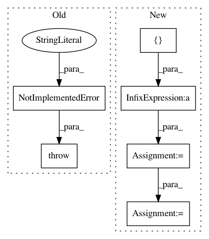

1df800bfd84cbdcdd9322166c746560058663f64,starry/ops/ops.py,OpsLD,render,#OpsLD#Any#Any#,663
Before Change
def render(self, res, u):
// TODO
raise NotImplementedError("Method not yet implemented.")
class OpsRV(Ops):
After Change
// Compute the Cartesian grid
dx = 2.0 / res
y, x = tt.mgrid[-1:1:dx, -1:1:dx]
x = tt.reshape(x, [1, -1])
y = tt.reshape(y, [1, -1])
mu = tt.sqrt(1 - x ** 2 - y ** 2)
// Compute the intensity
intensity = self.intensity(mu, u, no_compile=True)
// We need the shape to be (nframes, npix, npix)
return tt.reshape(intensity, (1, res, res))
In pattern: SUPERPATTERN
Frequency: 4
Non-data size: 6
Instances
Project Name: rodluger/starry
Commit Name: 1df800bfd84cbdcdd9322166c746560058663f64
Time: 2019-11-05
Author: rodluger@gmail.com
File Name: starry/ops/ops.py
Class Name: OpsLD
Method Name: render
Project Name: rodluger/starry
Commit Name: ca0c23317cd32c0bbcc807cf54b50ab64fc0fa22
Time: 2019-12-02
Author: rodluger@gmail.com
File Name: starry/kepler.py
Class Name: System
Method Name: solve
Project Name: albermax/innvestigate
Commit Name: 9a5d9828d3cfd2378a40a9b218ed654a05f2b35f
Time: 2018-04-16
Author: work.alber.maximilian@gmail.com
File Name: innvestigate/analyzer/base.py
Class Name: AnalyzerNetworkBase
Method Name: compile_analyzer
Project Name: tensorflow/datasets
Commit Name: d4ede9da4c0ccda38a4257f1c6d4bac0be1e2040
Time: 2020-11-10
Author: epot@google.com
File Name: tensorflow_datasets/scripts/cli/build.py
Class Name:
Method Name: _build_datasets